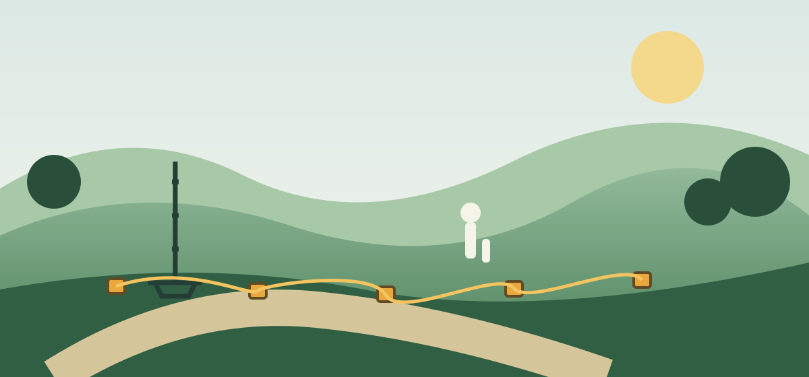
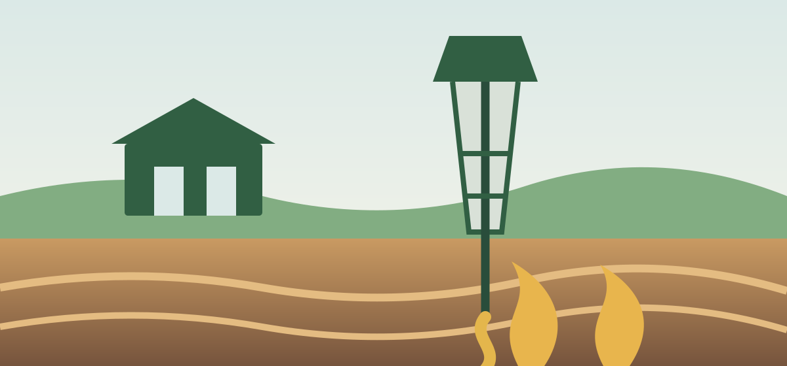
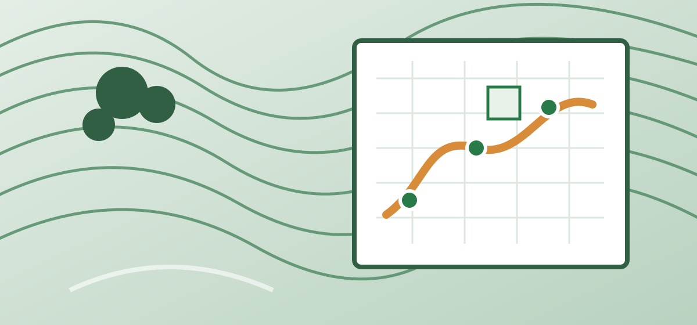

Geothermal Energy Momentum on the Island of Ireland.
A cross-border initiative showing how geothermal energy can play a practical, scalable role in decarbonising heat — across four demonstration sites.
Demonstration sitesGEMINI in action
Latest project features


- 15Project partners
- 7Associated partners
- 4Demonstration sites
- €20m / £17mInvestment
Demonstration to transformation
About GEMINI
Over four years the GEMINI project will help reduce greenhouse gas emissions associated with heat production — a goal central to EU, UK and Irish strategies to meet 2050 emissions targets.
Geothermal energy is a secure, local, near-zero emissions energy source suited to both urban and rural areas. GEMINI will use heat from the Earth in public buildings such as swimming pools, housing projects, utilities offices and a university campus.
Led by Codema and supported by PEACEPLUS (managed by SEUPB), endorsed by the Department for Climate, Energy and the Environment (Ireland) and the Department for the Economy (Northern Ireland).
Project aims
- De-risk shallow and deep geothermal energy projects
- Develop and support skilled jobs, policy and regulation for geothermal energy
- Meaningful engagement in developing a clean, sustainable energy solution
Less than 500m
Shallow geothermal
Systems at Sligo Regional Sports Centre and the NI Housing Executive Centre of Excellence, Belfast — near-zero emissions heat for public buildings, helping address fuel poverty.
Greater than 500m
Deep geothermal
A 2 km deep borehole at TU Dublin's Grangegorman campus to test a larger-scale heat network, plus data collection in the Antrim area to find future opportunities.
Long-term
Inclusion & prosperity
Education, skills and training, research, toolkits for planners, public engagement, business models and policy support across the whole island.
“As an alternative to fossil fuels, geothermal energy has a pivotal role to play in decarbonising heat. The GEMINI project will demonstrate and promote the benefits of geothermal across the island.”
“The GEMINI project will do more than just deliver infrastructure in the short term. It will also build essential capacity in our planning, education, research and energy design systems.”